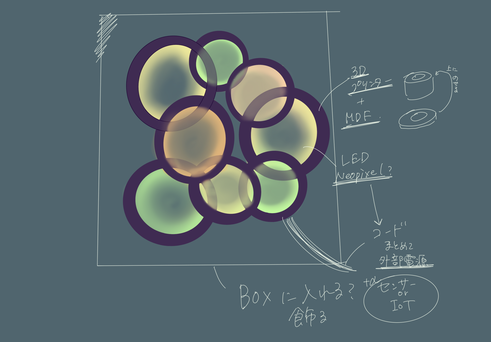

Project note
メンバー_LISA、jeffy
★アイディアスケッチ★

★概要★
きれいなものを作りたい！のとずっとじっと見ていられるものがいい！というグループ内の意見でできた、優しい色でモワーンとした何かです。
癒しを求めるも良し、時間を忘れるために使うも良し、結構明るいから寝るときのライトにしても良し、、、そんな作品になりました。
★プロセスメモ★
■考えなければならないこと、疑問等
●具体的にやること
→はやったこと
■本体を作る
●ネオピクセルのサイズに合わせて、枠をつくる
→3Dプリンターで枠をつくる
●ネオピクセルに線をつなげる
→はんだ付けで固定
■どうやって3Dプリンターで作ったものやネオピクセルを隠すか
→MDFで枠の装飾を作って隠す
■土台はどうするか、Aruduinoなどをどうやって隠すか
●ボックスを作って中にすべて入れる
→使用したモノ[3]のリンクから製作
●3Dプリンターで作ったものと土台をくっつける
→ボンドでつなげる、且つ穴をあけて配線がきれいになるようにした
■Arduinoの設定・接続
●外部電源の付け方を調べる
→外部電源の繋げ方を先生に教えてもらった
●Arduinoのプログラムを決める
■ずっと見ていられるものを作るにはどんな色がいいのか
●あったかい色中心のプログラムを考える
→使用したモノ[4]のりんくからデータ内のRGBを調整
●Arduinoと外部電源、ネオピクセルをつなぐ
→はんだで接続
★反省点・良かった点★
- 役割分担：グループ内で役割分担をしたことでスムーズに製作ができた
- 時間配分の設定：なかなかこれがいいなというアイディアが出ずに時間が過ぎて行ったり、追加で何かを作ろうとしたときがかなり遅かった
- 相談：わからないことがあった時、調べても出てこないのに先生に聞かず自分たちだけで考えて時間を無駄にしてしまった
★使用したモノ、リンク等★
- 3Dプリンター（素材:PLA）
- レーザーカッター（素材:MDF 装飾→2.5mm、土台→4mm）
- 土台のボックス
- ネオピクセルのプログラミングデータの元（使用の際に変更有り）
★紹介動画★